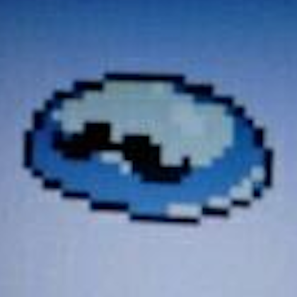

About this site
Hello! I'm Sam, a guy (he/him) from Italy who enjoys collecting and talking about various things!
My hobbies include collecting electronics and old computers, documenting
electrical items from all over the world, experimenting with
analog video, and going on train trips.
On this site I like to document my longer-running projects, in a way that people can find and discover easily. My most extensive project at the moment is my collection of electrical items, which spans several pages and covers old and new items from all around the world. In the future I'd also like to talk some more about analog video art, trying out different tools and setups and uploading videos with the results.
More regular updates about my hobbies can be found on the various social media accounts listed later in this page.
About my profile picture

For many years now I've been using this profile pic of a moustached rock from the video game Undertale (which I only
recently found out is actually supposed to be a slime).
It was just a random picture I remember taking while playing the game in 2017 and I've used it on all my social media
accounts ever since (in a few different forms), so it has essentially come to represent me, in a way.
Social media links
You can find all my accounts here:
Websites you might like
- Open Railway Map - a map showing railway tracks and infrastructure across the world
- VagonWEB - compositions of national and international trains in various European countries
- The Digital Museum of Plugs and Sockets - an impressive museum documenting all the different types of plugs used worldwide